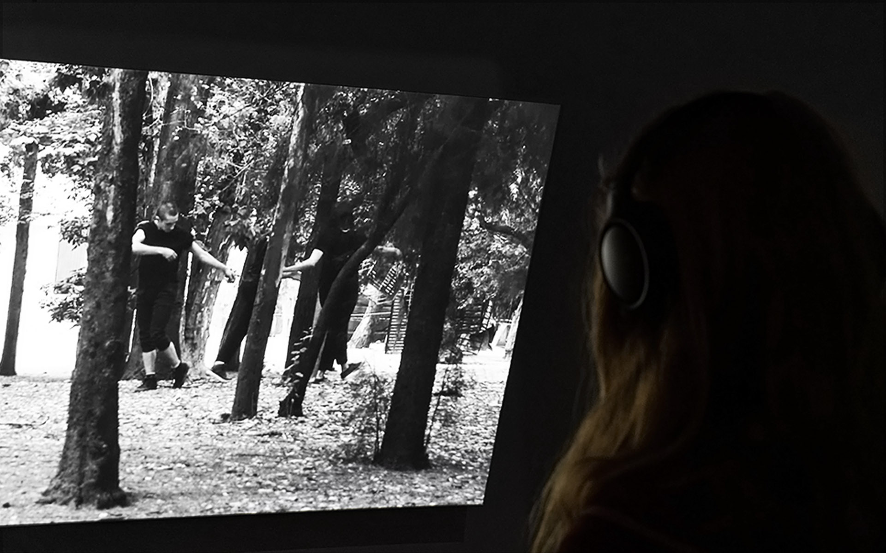
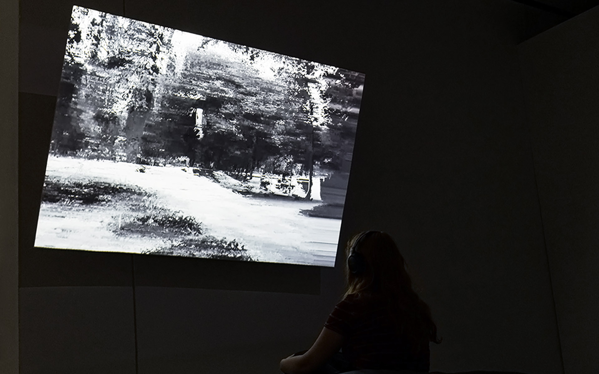
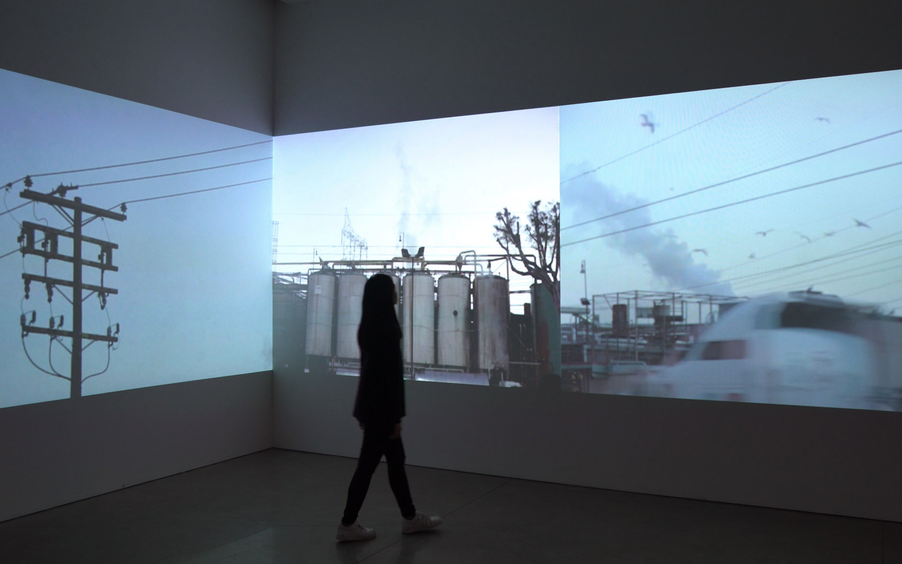

Selected Artwork /
2019
Spatial Disintegration
video installation


This project is about the shifting perceptions of our body-space relationships. Spatial Disintegration is based on the brutalist framework being that it has a history of contradiction. Such movement stems from socialism, which then sci-fi films borrowed
their architecture as an icon to represent totalitarianism. This same shift of perception comes in the types of agencies people have with space and structures. For the visualization of this concept, I filmed dancers cohabit
in public spaces surrounded by brutalist structures. Those dancers performed sets of LMA (laban movement analysis) movements, which comes from their awareness of their body in such space, the (repetitive) imitation of others
that also exist in that space and their personal relationship with the spatial qualities of their environment. The end result was a generative film with procedural overlaying visual distortions, emphasizing their own interpretation
of space and how that has an impact on architecture and the multiplicity of our behavior in that environment.
2019
Single-channel video installation (color), projection, custom software, headphones, custom tilted wall
Sound Design by Coco Badan
Performed by Agustina Suárez, Alberto Munguía, Año Luz Plataforma Escénica (Luis Neri), Jose Merino, Katia Zaitseva and Victor Siáñez-Vaca
Recieved DMA (Design and Media Arts) Senior Exhibition Award
UCLA Design and Media Arts thesis project
2019
Single-channel video installation (color), projection, custom software, headphones, custom tilted wall
Sound Design by Coco Badan
Performed by Agustina Suárez, Alberto Munguía, Año Luz Plataforma Escénica (Luis Neri), Jose Merino, Katia Zaitseva and Victor Siáñez-Vaca
Recieved DMA (Design and Media Arts) Senior Exhibition Award
UCLA Design and Media Arts thesis project
2019
Signaling Noise
video installation


Signaling Noise, LA captures the Los Angeles city sites where sound becomes noise. In the past year, I’ve become interested in recording sound and how space shapes sound [and vice versa]. When realizing that most of my sound data collected in that year
was of city noise, I began to record footage of those sites with the aim to focus on sound as space. Signaling Noise, LA is rethinking the urban landscape in terms of spatial sound, while the city architecture has an effect
on the sound environment the noise disruption that is generated is often unnoticed. Viewing noise as space becomes a prominent idea in this work, the custom software reinforces that idea by distorts each frame depending on
the sound frequency of its city site, visually disrupting the image through noise.
2019
Three-channel video installation (color), projection, custom software, two-channel audio
Sound Design by Andrew Ortiz
Recieved DMA (Design and Media Arts) 2019 Undergraduate Exhibition Award
2019
Three-channel video installation (color), projection, custom software, two-channel audio
Sound Design by Andrew Ortiz
Recieved DMA (Design and Media Arts) 2019 Undergraduate Exhibition Award
2019
Hidden Numbers
3d animation
The web is a means of communication and thus a way of expressing current state of events; with the help of digital sources we’re able to receive data endlessly. Most of those sources make use of machine learning algorithms to enhance our interaction with
people from all around the globe, creating a sustainable virtual ecosystem. However, our information is not solely virtual, mass data is stored in warehouses called data centers. Major corporations fail to address the negative
environmental impact that these data centers have by making their locations anonymous. The servers used to store data requires an exponential amount of energy and cooling power, which contributes to our carbon dioxide footprint.
The portrayal of the web as an eco-friendly space free of waste is inaccurate, Hidden Numbers is aiming to address such environmental issues that most aren’t aware of yet all participate in. Through generative visual poetry
and textured sounds, Hidden Numbers is referencing the conflict that exists with our virtual interactions. By demystifying the medium, which is the web, one can conclude that such sustainable environment also stores virtual
waste. Hidden Numbers aims to create awareness of our virtual and physical print that is caused by our sharing of information.
2018
Video (color), custom software, audio
Hidden Numbers is a work done for the magazine Re Fuse, Volume 2
2018
Video (color), custom software, audio
Hidden Numbers is a work done for the magazine Re Fuse, Volume 2
2019
Augmented Proximity
interactive projection mapping (case study)

Augmented Proximity focuses on human-machine interaction and how it can be amplified by regulating the field of view in accordance with proximity of the user to the objects. To simulate the movement of the geometry in real time, they are mounted on the
KUKA robots and by using live connection, resulting in creation of intuitive movement path. Our physical model enhances the morphing of surfaces to curvilinear geometries and its spatial potential. These aspects of the project
are enhanced by generative particles through projected content. Further we mapped real time interaction with machine vision technologies. Biological aspect of the project was enhanced through Augmented Reality with integration
of organic growth systems.
2018
Interactive projection mapping (color), KUKA robot, AR, VR, custom software, custom 3D
objects
Team members: Dhwani Gogri, Evgenia Terzi, Hui Lui, Karan Pashine, Karina Lopez
Winter 2018 Tech-Seminar, SUPRASTUDIO in Technology
2018
Interactive projection mapping (color), KUKA robot, AR, VR, custom software, custom 3D
objects
Team members: Dhwani Gogri, Evgenia Terzi, Hui Lui, Karan Pashine, Karina Lopez
Winter 2018 Tech-Seminar, SUPRASTUDIO in Technology
2019
Cognitive Chronesthesia
video installation
Cognitive Chronesthesia is a site specific visual interpretation of memory time travel. This work depicts the synchronistic connection between memories and cognition through motion graphics and found footage. Presented as a video installation at UCLA
Broad Art Center.
2017
Three-channel video installation (color), projection, two-channel audio
Music: “Distance” by Nosaj Thing
2017
Three-channel video installation (color), projection, two-channel audio
Music: “Distance” by Nosaj Thing
2019
Data Frequency
video installation
Data Frequency is a research based project that analyzes the consumption of fake news. This series embodies data overload through sound, text and images from different media coverage emphasizing the overwhelming quantity of abstracted content.
2017
Two video installation (color), screen, headphones
Exhibited at J. Paul Getty Museum for College Night
2017
Two video installation (color), screen, headphones
Exhibited at J. Paul Getty Museum for College Night
2019
Reuse by Design
book, photography
Reuse by Design is addressing the environmental impact that consumerist culture has had, where fast fashion is a daily routine, pushing us to produce more waste. Furthermore, this project is an attempt to explore how design could contribute to a re-imagination
of speculative wearable design by reusing one’s trash. The focus on wearable design is inspired by the exponential growth of fast fashion and it being one of the primary polluters. Putting myself as an example, for a week I
listed the amount of trash I consumed and created a dataset of each individual product. After analyzing my week’s worth of trash, it led me to rethink my relationship with materials. By exploring the functionality of my trash,
I shifted from the ordinary use to more creative and authentic ones.
2018
50 pages (color), one copy
To see entire book, click here
2018
50 pages (color), one copy
To see entire book, click here
Selected Client Work /
2021
Visitor Welcome Center
website

In collaboration with Leming ﾉ*:･ﾟ✧.
Our role: Designers and Developers.
Visitor Welcome Center became an art space/gallery in 2016 founded by the artist and writer David Bell. From curated art shows to art community shaping, Visitor Welcome Center is a place for unconventional artists to unite through art and ideas.
Our role: Designers and Developers.
Visitor Welcome Center became an art space/gallery in 2016 founded by the artist and writer David Bell. From curated art shows to art community shaping, Visitor Welcome Center is a place for unconventional artists to unite through art and ideas.
2020
Rebeca Mendez Studio
website

Role: Designer and Developer.
Rebeca Méndez is a world-renowned artist, designer. Her research and practice investigates design and media art in public space, critical approaches to public identities and landscape, and artistic projects based on field investigation methods.
Rebeca Méndez is a world-renowned artist, designer. Her research and practice investigates design and media art in public space, critical approaches to public identities and landscape, and artistic projects based on field investigation methods.
2020
Compressed Cinema
website

Role: Designer and Developer.
Compressed Cinema is the series title for five new audiovisual works completing in 2020. The images were created by Casey REAS, and each work has a stereo audio track composed by Jan St. Werner.
Compressed Cinema is the series title for five new audiovisual works completing in 2020. The images were created by Casey REAS, and each work has a stereo audio track composed by Jan St. Werner.
2020
p5.js (showcase)
website
2020
Counterforce Lab
website

Role: Designer and Developer.
counterforce lab is a research studio that harnesses the power of art and design to engage with the reality of global ecological crisis and its ties to environmental injustice. counterforce lab is a collection of artists, designers, scientists, and thinkers working in transdisciplinary collaboration to create new theoretical frameworks based on artistic fieldwork practices, and in co-creation with community partners.
counterforce lab is a research studio that harnesses the power of art and design to engage with the reality of global ecological crisis and its ties to environmental injustice. counterforce lab is a collection of artists, designers, scientists, and thinkers working in transdisciplinary collaboration to create new theoretical frameworks based on artistic fieldwork practices, and in co-creation with community partners.
Karina López is a Mexican artist and creative technologist.
Based on east and west coast of the US.
She deconstructs virtual performances and visually systematize them. Through the use of technology in her work, she disrupt the sense of emotional and social permanence. While exploring themes of decolonization of bodies in space, ethics of technology and the poetics of intimacy, there is an underlying tone of melancholy. Her work takes the form of custom software, video installation, moving images, and photography, allowing me to create visual narratives that give room for a gentle surrender to the transitions in time.
B.A. Design and Media Arts, UCLA, 2019.